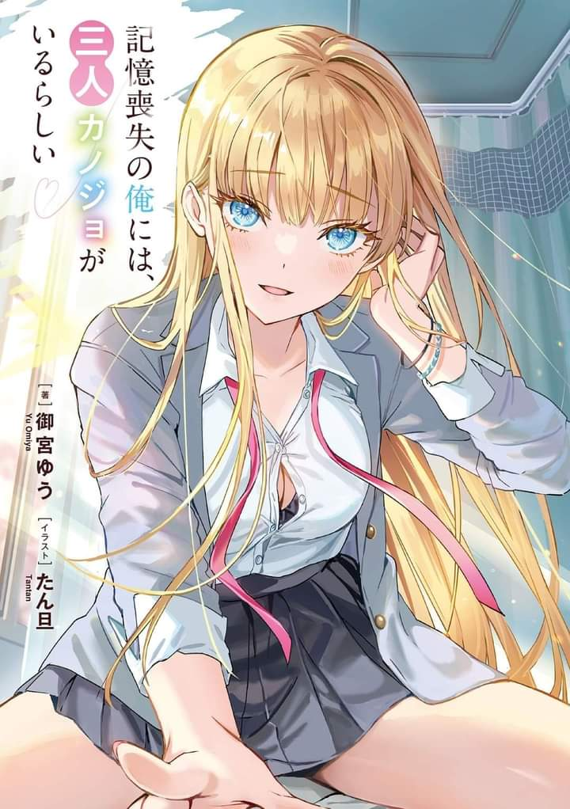

It Seems That I, Who Have amnesia, Have Three Girlfriends
Novel Info's
Status: Ongoing
Genre: Comedy, Ecchi, Harem, Romance, Shounen
Author: Omiya Yuu
Illustrator: Tantan
Volumes: 2
Original Publisher: N/A
English Publisher: N/A
Fan Translation: Van Halen
Description/Sypnosis
──A strong shock to the head.
This is my only memory, and the reason why is that I have no prior memories is because I have amnesia. I woke up in my hospital room, and when some visitors came to visit me, I realized something.
I have three girlfriends.
Each of my three girlfriends is unique and attractive in her own way. Asuka Minato, a childhood friend who always takes care of me. Saki Arisugawa, a charismatic model in the same class, and Hina Fueno, an introverted otaku junior with a small-animal-like appearance, who was proclaiming herself as a fan of mine for some reason (?)
I have three girlfriends, I have no memory of my past, and my school life begins with a state of unbelievable anxiety.
The ‘me’ in the past. What in the world did you do──?!
Download Links
Epub & Pdf